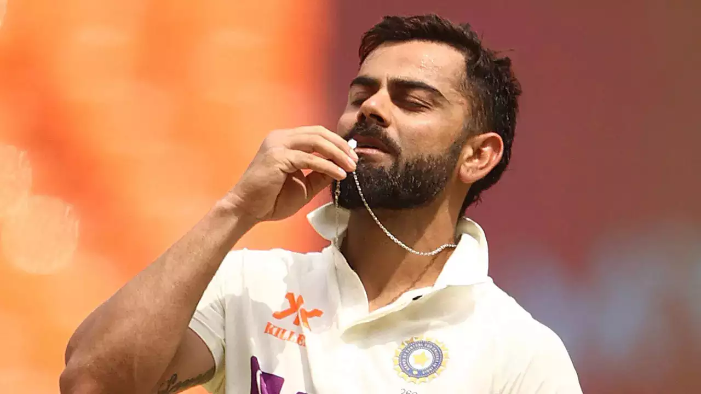
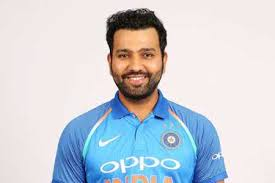

VIRAT KHOLI

Posted on February 21, 2025 by Author
Virat Kohli (born November 5, 1988, Delhi, India) is an Indian international cricketer considered by many as one of the greatest batsmen in the history of the game. Kohli plays for (and previously captained) the Royal Challengers Bangalore (RCB) in the Indian Premier League (IPL). He is also a former captain of the Indian cricket team in all three international formats—Test cricket, one-day internationals (ODIs), and Twenty20 internationals (T20I)—making him one of India’s most successful captains. Read more...
ROHIT SHARMA

Posted on February 20, 2025 by Author
Rohit Sharma (born April 30, 1987, Bansod, India) is an Indian international cricketer and the current captain of the Indian cricket team in the Test and One-Day International (ODI) formats. Sharma was also the captain of India’s Twenty20 International team until he announced his retirement on June 29, 2024, after leading the Indian side to its T20I World Cup victory. He captained the Mumbai Indians, a franchise team in the Indian Premier League (IPL), for 10 years and led them to five titles. Sharma is known for his batting prowess and is nicknamed “Hitman” by his fans. He is also an occasional off-spinner. Read more...